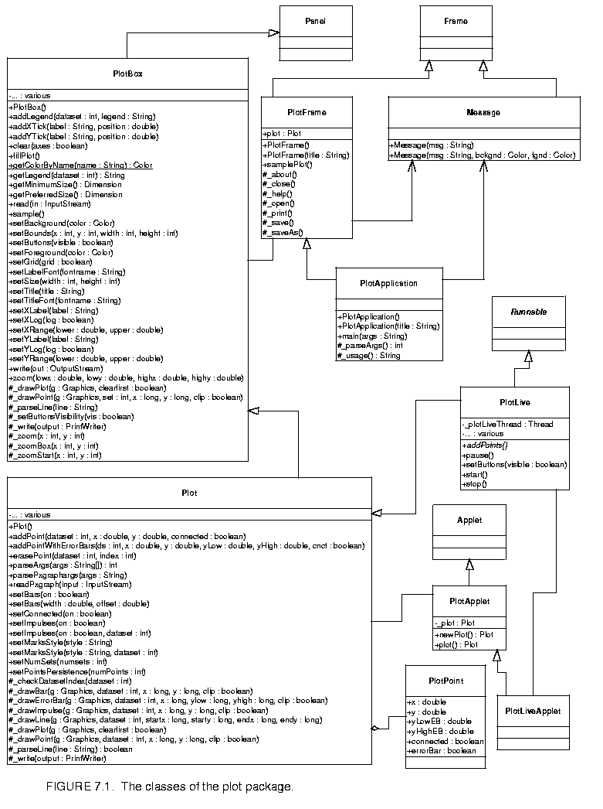

Page 9 out of 12 total pages
The plot package in Ptolemy II is one of several utility packages that provide support functionality for simulations and applets. It is available in a stand-alone distribution, or as part of the Ptolemy II system. The class diagram is shown in figure

7.1. The key classes are:The user interface supported by these classes is very rudimentary. Zooming in and out is supported. To zoom in, drag the mouse downwards to draw a box. To zoom out, drag the mouse upward. In addition, several of these classes permit the placement of buttons that exercise certain simple controls. The fill button fills the available space with the available data. The start and stop buttons, used by the PlotLive class, start and stop an animated plot.
The PlotFrame class adds a menu that contains a richer set of commands, including opening files, saving the plotted data to a file, printing, etc. Currently, the set of commands is far from complete. In the future, we hope that on-line formatting of the plots and exporting to popular graphics formats will be supported.
Instances of the PlotBox and Plot classes can read a simple file format that specifies the data to be plotted. These files can be accessed via URLs. Each file contains a set of commands, one per line, that essentially duplicate the methods of these classes. There are two sets of commands currently, those understood by the base class PlotBox, and those understood by the derived class Plot. Both classes ignore commands that they do not understand. In addition, both classes ignore lines that begin with "#", the comment character. The commands are not case sensitive. In addition, for backward compatibility, these classes can read the binary file format of a prior plotting program called pxgraph.
NOTE: We are likely to change the preferred file format to one based on XML. We hope to maintain backward compatibility with this format, but do not plan to extend this format.
The following commands are understood by the base class PlotBox. These commands can be placed in a file and then read via the read() method, or via a URL using the PlotApplet class. The recognized commands include:
These commands provide a title and labels for the X (horizontal) and Y (vertical) axes. A string is simply a sequence of characters, possibly including spaces. There is no need here to surround them with quotation marks, and in fact, if you do, the quotation marks will be included in the labels.
The ranges of the X and Y axes can be optionally given by commands like:
The arguments min and max are numbers, possibly including a sign and a decimal point. If they are not specified, then the ranges are computed automatically from the data and padded slightly so that datapoints are not plotted on the axes.
The tick marks for the axes are usually computed automatically from the ranges. Every attempt is made to choose reasonable positions for the tick marks regardless of the data ranges (powers of ten multiplied by 1, 2, or 5 are used). However, they can also be specified explicitly using commands like:
A label is a string that must be surrounded by quotation marks if it contains any spaces. A position is a number giving the location of the tick mark along the axis. For example, a horizontal axis for a frequency domain plot might have tick marks as follows:
XTicks: -PI -3.14159, -PI/2 -1.570795, 0 0, PI/2 1.570795, PI 3.14159
Tick marks could also denote years, months, days of the week, etc.
The X and Y axes can use a logarithmic scale with the following commands:
The tick labels, if computed automatically, represent powers of 10. Note that if a logarithmic scale is used, then the values must be positive. Non-positive values will be silently dropped.
By default, tick marks are connected by a light grey background grid. This grid can be turned off with the following command:
Also, by default, the first ten data sets are shown each in a unique color. The use of color can be turned off with the command:
All of the above commands can also be invoked directly by calling the corresponding public methods from some Java code.
The set of commands understood by the Plot class support specification of data to be plotted and control over how the data is shown.
The style of marks used to denote a data point is defined by one of the following commands:
Here, "points" are small dots, while "dots" are larger. If "various" is specified, then unique marks are used for the first ten data sets, and then recycled. Using no marks is useful when lines connect the points in a plot, which is done by default. If the above directive appears before any DataSet directive, then it specifies the default for all data sets. If it appears after a DataSet directive, then it applies only to that data set.
To disable connecting lines, use:
You can also specify "impulses", which are lines drawn from a plotted point down to the x axis. Plots with impulses are often called "stem plots." These are off by default, but can be turned on with the command:
If that command appears before any DataSet directive, then the command applies to all data sets. Otherwise, it applies only to the current data set.
To create a bar graph, turn off lines and use any of the following commands:
The width is a real number specifying the width of the bars in the units of the x axis. The offset is a real number specifying how much the bar of the i-th data set is offset from the previous one. This allows bars to "peek out" from behind the ones in front. Note that the frontmost data set will be the first one. To turn off bars, use
To specify data to be plotted, start a data set with the following command:
Here, string is a label that will appear in the legend. It is not necessary to enclose the string in quotation marks.
To start a new dataset without giving it a name, use:
In this case, no item will appear in the legend.
If the following directive occurs:
then datasets with the same name will be merged. This makes it easier to combine multiple data files that contain the same datasets into one file. By default, this capability is turned off, so datasets with the same name are not merged.
The data itself is given by a sequence of commands with one of the following forms:
The "draw" command is optional, so the first two forms are equivalent. The "move" command causes a break in connected points, if lines are being drawn between points. The numbers x and y are arbitrary numbers as supported by the Double parser in Java (e.g. "1.2", "6.39e-15", etc.). If there are four numbers, then the last two numbers are assumed to be the lower and upper values for error bars. The numbers can be separated by commas, spaces or tabs.
The number of data sets to be plotted does not need to be specified.
The plot package is a starting point, with a number of significant limitations.